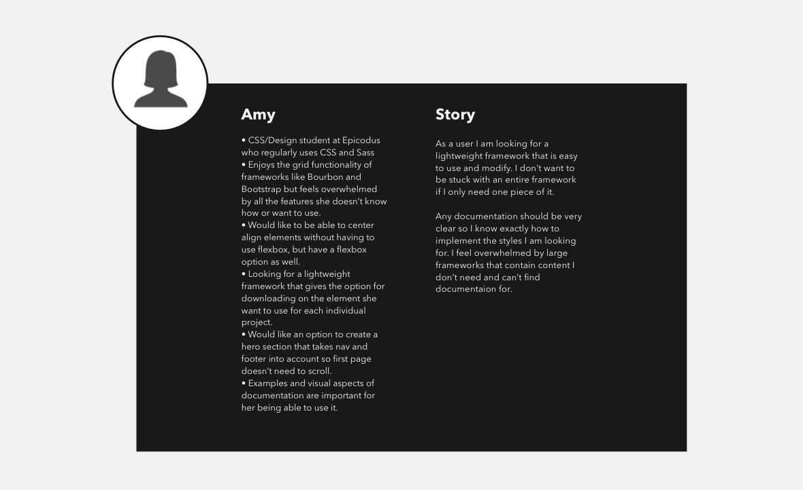
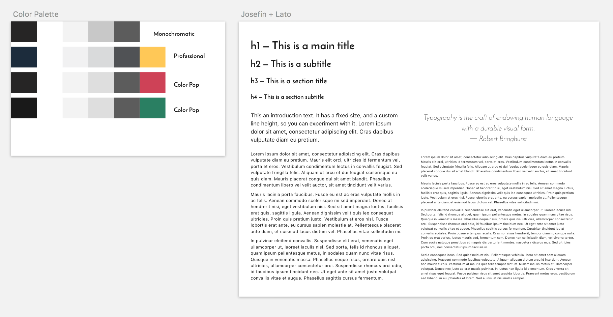
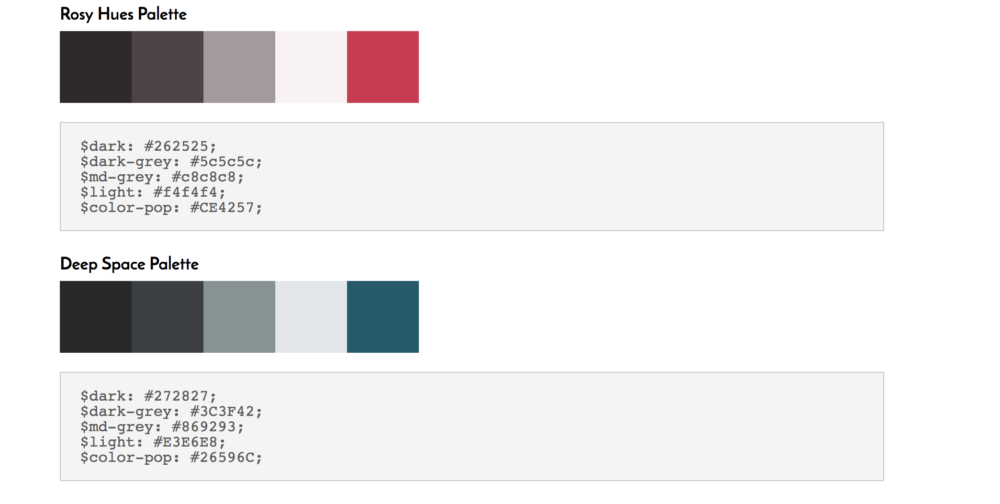
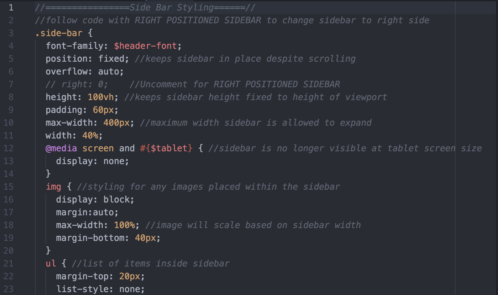
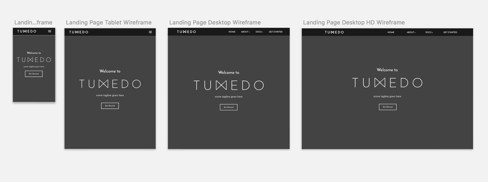
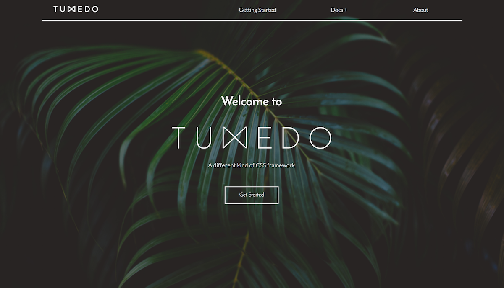

Tuxedo CSS began as my capstone project for Epicodus. I knew I wanted to do something that was completely original and unique that showcased who I am becoming as a front-end developer. I played around with several more traditional app ideas before deciding I wanted to create a brand new framework built for developers.
That might be a bit of an exaggeration, but day one it was how I felt. I had never built a framework before and I had absolutely no idea where to start. My initial fear was that I had bitten off way more than I could chew. With only 2 weeks until the project demo, I knew I was going to have to work fast to build not only the framework itself, but also the documentation website so it would be usable.
So to unfreeze myself from the panic, I started in the most logical place I could - the logo. There is something about having a visualization of the logo that cements in my mind the shape and feel for the entire project. So starting with the logo, as trivial as it may sound, made all the difference. It gave me an outline for the simple, clean interface I wanted to aim for with Tuxedo.
Comparison of initial Tuxedo logo from my sketchbook and the final version which was created using Sketch. I loved the idea of incorporating a bow tie for the x early on. Sidenote: I was not the biggest Sketch fan early on - especially being used to Adobe Illustrator and Photoshop, but it is sloooowly starting to win me over.One of the initial reasons I wanted to build Tuxedo was that I had grown exhausted of using frameworks like Materialize and Bootstrap. While they both can create truly amazing web experiences, I'm not the kind of person who likes to just let thousands of lines of code sit in the background of my project - especially if I have no idea what they are doing and it is a hassle to override them. I would end up with too many lines of CSS just to change a simple button or navbar, and I knew my fellow design peers felt the same way. With Tuxedo I wanted to see if it was possible to design a framework built with the front-end developer in mind; someone who didn't just want to use the presets, but who was knowledgable enough to dig into the actual code to create custom changes.
So I made a list of 10 questions I wanted answers to from both front-end and back-end students. Among those questions were:
As I began asking fellow students these questions I noticed patterns begin to emerge among the front-end students and the back-end students and they didn't necessarily play well together.
After my questions phase I saw a stark difference in the needs of front-end and back-end students. While front-end students with more knowledge of CSS and design wanted a lightweight easily customizable framework, students in back-end tracks wanted a framework that looked good right out of the box, no changes necessary. Both sides expressed being tired of cookie cutter sites that look like they were built with a specific framework, and the need for clear documentation with visuals and code snippets.
So I had a new goal: create a framework that could make both sides happy. Enough pre-formatted styles that it would be easy to drop in elements and have a site up and running almost immediately, and code customizable enough that it could easily be changed to create a specific look.
My next step was putting together several user stories based on the answers I had received.
 Example of one user persona and story put together from my earlier questions.Designing the Tuxedo look was a mixture of creating quick mockups for specific elements in Sketch and then coding them out to see if what I had designed was atomic and could stand-alone well enough to work on a larger scale. For example, I had this awesome idea for an outlined "ghost" form, but then realized my current concept wasn't atomic enough to be made into a class that could be applied to any form - who knows maybe I'll revisit this one someday.
  Top: Some of the initial color palettes and font selections I created in Sketch. I wanted to maintain a neutral palette with options for adding a pop of color. Bottom: Documentation on the Tuxedo website for easily updating global color palette.Once I had several Sketch artboards with forms, buttons, navs, heroes, etc. I moved completely toward coding everything out. As I said before, I wanted Tuxedo to be easily editable.
The main thing that makes Tuxedo so unique is that its code is meant to be manipulated. Tuxedo's CSS files are well commented and clearly named so it is easy for developers to change specific elements.
This means fewer tacked on styles used to override the framework and less cookie cutter lookalikes. If you want your navbar to be a different height or your sidebar to be on the right side instead of the left simply go into the Sass files and change it! This is my favorite part of Tuxedo. It felt like I really hit my goal of making something better for front-end developers, while still giving enough built in presets to make designing easy for those who didn't want to make the front-end their main focus.
 Example of Tuxedo's code for the sidebar component. It is easy to see how well commented each element is, making it easy for the developer to go in and change what they want. There are easy walk-through instructions for changing from a left to right positioned sidebar.I was initially mortified of this stage. I though it was going to be incredibly difficult to show examples of each element and then also have a place to copy the code. I was afraid it was going to look messy and perform poorly. However, as luck would have it, this stage ended up being relatively straightforward, although a major time hog.
I came up with some quick mockups in Sketch and an InVision prototype - view here - for what I wanted the documentation to look like by Thursday morning of week 1. I then hopped back into Atom to start coding. In the framework, I had divided each component out into a separate Sass file, so in the documentation I gave each of those files its own section. For example, there is a section for the nav, buttons, heroes, components using Three.js, etc.
 Here is a look at my initial wireframe in Sketch for how the documentation landing page would look. I tend to design for all screen sizes from the very beginning so I have a good idea of how things will break down.One of the best and most surprising results of creating the documentation was how many new things I added on to the actual framework as a result. I would have an idea for something I wanted for the documentation site and then create it as a modular component I could add to the framework. This is how I ended up with a sidebar and footer components, as well as several nifty helper classes.
Thursday of week 2 was show day and things were inching closer and closer to a showable final product. One last big hurdle was figuring out how users would be able to download Tuxedo. I created several zipped versions, one that included every Sass and JavaScript file, and several that included just the files needed for specific components. I then pushed it all to a gh-pages branch and it was live! I ended up buying a custom domain from Namecheap and leaving the site hosted on gh-pages. This way whenever I make updates I can push them straight to the branch and they are instantly live.
Tuxedo is still very much a work in progress and I am continually trying to adapt and add new things to its code. Considering the bulk of this framework was built in a little less than two weeks, I have to say I'm pretty pleased with the results. Now that the initial obstacle of just getting something out the door is over, I am happy I chose to focus on a project that stretched me so completely. I have already noticed how much more reusable the code I am writing has become. I'm no longer satisfied with hacky this-will-do-for-now solutions, instead I want CSS that works well and will continue to work in whatever variations I twist it into.
 Here is a look at the final landing page for Tuxedo. Image courtesy of Unsplash.Give Tuxedo a looksie over at http://tuxedocss.us